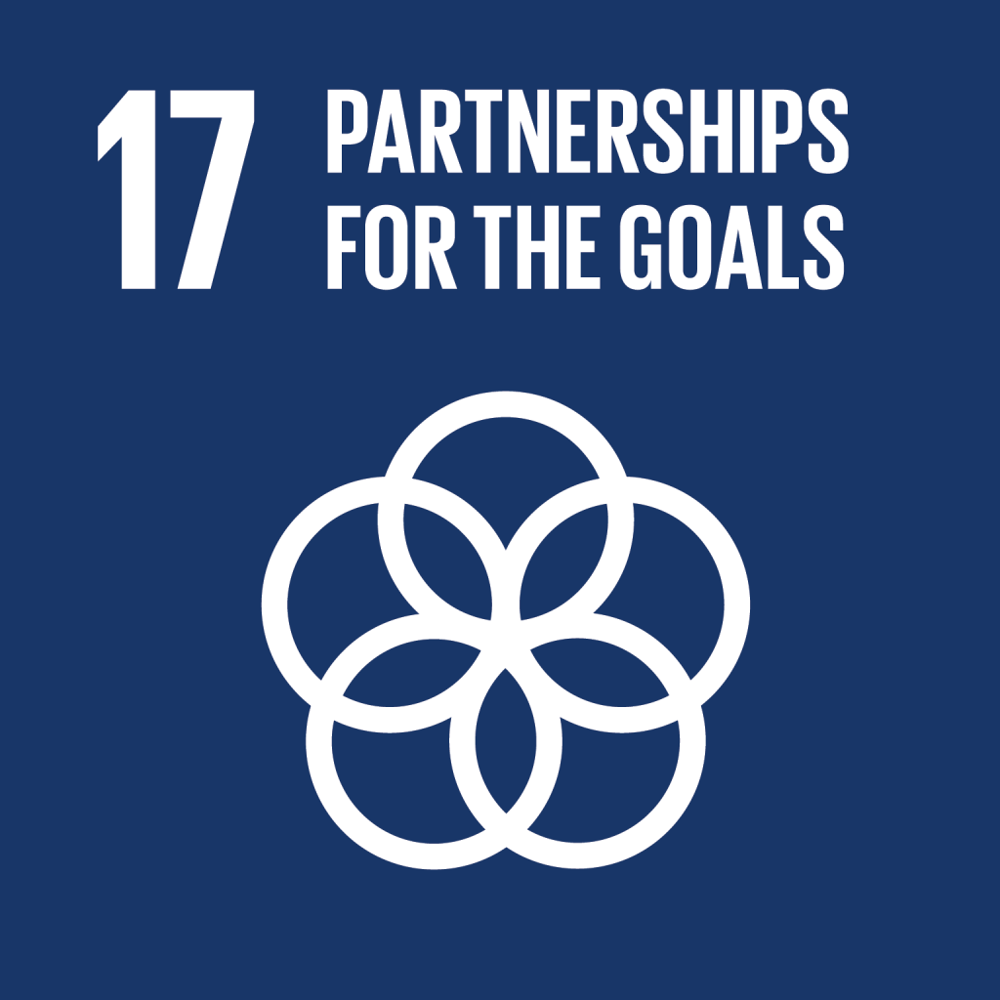
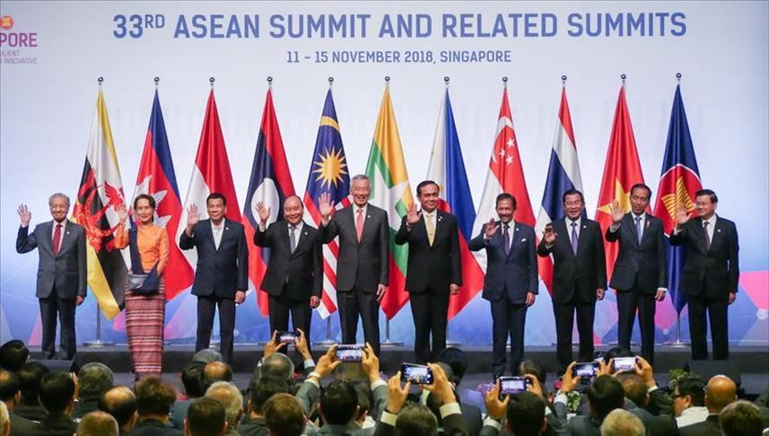
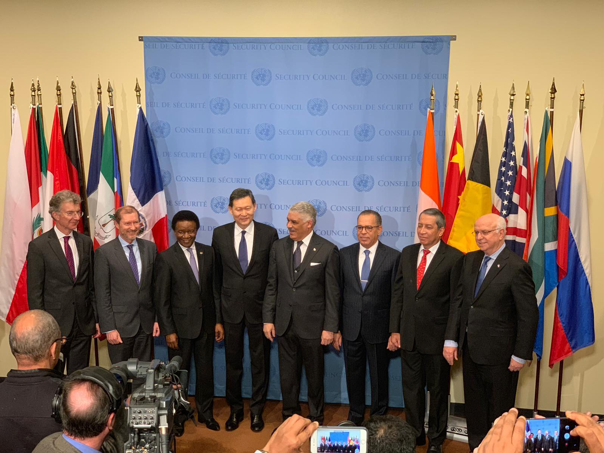
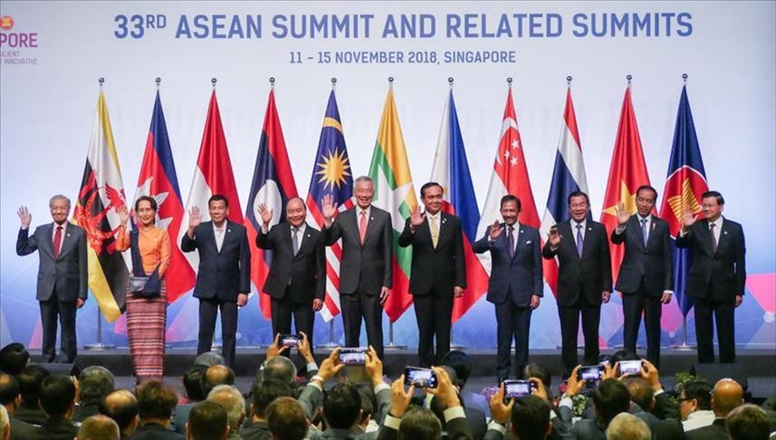
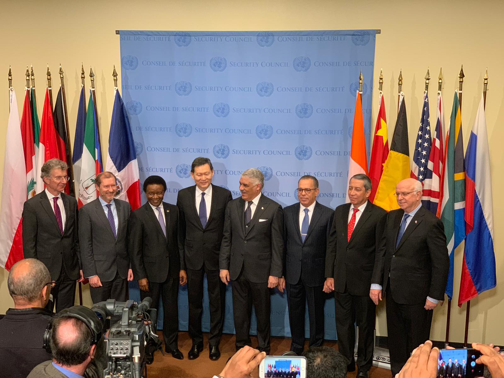

Salam Redaksi
Halo semua! 👋
Perkenalkan saya Natalie dari kelas IX-3 no absen 29 dan selamat datang ke website saya! 🙋♀️ Dalam rangka tugas IL Kolaborasi TIK-PPKn-IPS, saya ingin membuat website yang membahas terkait SDGs (Sustainable Development Goals) khususnya SDGs 3 yaitu tentang kesehatan dan kesejahteraan bagi seluruh masyarakat 🏥👩⚕️ tanpa membeda-bedakan.Saya juga akan membahas terkait peran masyarakat, tantangan yang dialami beserta dengan solusinya, dan macam-macam kerja sama di Indonesia.
Melalui kerjasama internasional seperti kerja sama bilateral, regional, dan multilateral, saya yakin kita bisa menciptakan negara-negara yang lebih maju dan lebih baik. 🤝 Dengan saling berbagi pengetahuan, pengalaman, sumber daya, dan teknologi setiap negara dapat berkembang dan saling belajar.Dengan semua kerjasama yang diikuti oleh Indonesia baik bilateral, regional, maupun multilateral dan kontribusi aktif dari masyarakat Indonesia dapat mengatasi masalah-masalah seperti kemiskinan, perubahan iklim, ketimpangan kesehatan, dan tantangan sosial lainnya. 👥 Secara khusus, website ini akan lebih membahas terkait pentingnya kesehatan dan kesejahteraan bagi seluruh masyarakat di Indonesia.
Website ini saya buat untuk membantu memberikan pemahaman tentang tantangan dalam mencapai SDGs, solusi yang dapat dilakukan, serta bagaimana kita sebagai masyarakat dapat berkontribusi secara langsung. 💡Semoga kita semua sebagai masyarakat Indonesia dapat lebih sadar atas pentingnya kerjasama internasional dan kontribusi secara langsung dari kita sendiri sebagai masyarakat. Saya harap website ini bisa menjadi wadah yang informatif dan inspiratif. 📚 Website ini dirancang untuk memberikan pemahaman yang lebih mendalam tentang tantangan untuk mencapai SDGs, solusinya, dan bagaimana kita sebagai masyarakat dapat ikut serta membantu mengatasinya.
Terima kasih! Selamat membaca 📖
Natalie IX-3/29

bertujuan untuk mengakhiri kemiskinan dalam segala bentuk di seluruh dunia. Dapat membantu atau memberdayakan orang yang hidup dalam kondisi yang rentan.

bertujuan untuk menghilangkan kelaparan dan mencapai ketahanan pangan. Menekankan upaya perbaikan gizi dan pertanian berkelanjutan

Bertujuan meningkatkan kesehatan dan kesejahteraan seluruh masyarakat melalui pengendalian penyakit serta perluasan akses terhadap layanan kesehatan

bertujuan untuk menyediakan akses pendidikan yang lebih adil dan berkualitas untuk semua orang serta kesempatan belajar sepanjang hayat untuk semua.

bertujuan untuk menghapus diskriminasi gender dan kekerasan berbasis gender dengan akses pendidikan dan pekerjaan yang layak untuk semua.

bertujuan untuk membuka akses terhadap air bersih dan sanitasi yang lain. Berfokus kepada pengelolaan air berkelanjutan dan cara mengatasi polusi air.

bertujuan untuk mencakup promosi energi terbarukan dan efisiensi energi. Ingin tercapainya akses terhadap energi yang lebih terjangkau dan modern.

bertujuan untuk menciptakan pertumbuhan ekonomi inklusif dan memastikan pekerjaan yang layak untuk semua

bertujuan untuk membangun infrastruktur yang kokoh, meningkatkan industrialisasi yang berkelanjutan, dan mendorong perkembangan inovasi

bertujuan untuk mengurangi kesenjangan di dalam dan antar negara. Dengan mempromosikan inklusi sosial, ekonomi, dan politik bagi semua

bertujuan untuk menekankan perencanaan kota yang baik dan dapat menjamin akses terhadap transportasi umum.

bertujuan untuk menekankan pentingnya efisiensi sumber daya, pengelolaan limbah, dan pengembangan produk ramah lingkungan.

bertujuan untuk mengatasi perubahan iklim dan dampaknya, berupaya untuk segara mengambil tindakan seperti mengurangi emisi gas rumah kaca

perlindungan dan pemanfaatan berkelanjutan sumber daya laut dengan menjaga pelestarian ekosistem laut dan pemanfaatan sda maritim

bertujuan untuk melindungi, memulihkan, dan meningkatkan penggunaan ekosistem bumi secara berkelanjutan

bertujuan untuk mendorong masyarakat yang damai, menyediakan akses terhadap keadilan untuk semua, dan membangun lembaga yang efektif

bertujuan untuk menghidupkan kembali kemitraan global untuk pembangunan berkelanjutan dan fokus ke pengembangkan kapasitas dan transfer teknologi

 


